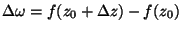
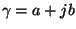
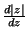
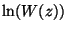

|
You are here : Control System Design - Index | Book Contents | Appendix C | Section C.6 C. Results From Analytic Function TheoryC.6 Analytic functionsDefinition 1.2 A function f(z) is said to be analytic in a domain D, if f has a continuous derivative in D.
Theorem 1.6 If w = f(z) = u + jv is analytic in D, then u and v have continuous partial derivatives satisfying the Cauchy-Riemman conditions.
Furthermore
Proof Let z0 be a fixed point in D and let . Since f is analytic, we have
where

and
So
Thus in the limit, we can write
or
Actually most functions that we will encounter will be analytic, provided the derivative exists. We illustrate this with some examples. Example C.1 Consider the function f(z) = z2. Then
The partial derivatives are
Hence the function is clearly analytic. Example C.2 Consider f(z) = |z|. This function is not analytic because d|z| is a real quantity and hence  will depend on direction of z. Example C.3 Consider a rational function of the form:
These derivatives clearly exist, save when D = 0, i.e. at the poles of W(z). Example C.4 Consider the same function W(z) defined in (C.6.11). Then
Hence,  is analytic, save at the poles and zeros of W(z). |